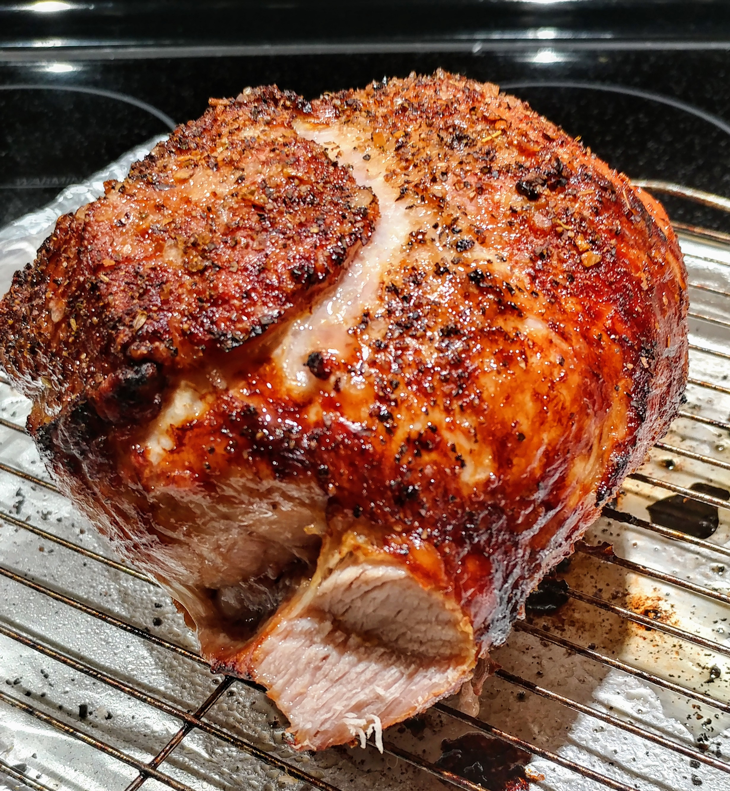

Pork Roast

Description
This pork roast is surrounded by onions and butternut squash, and baked in a savory and sweet sauce.
Ingredients
- 2 1/2 pounds boneless pork loin
- 1 teaspoon garlic powder
- salt and pepper to taste
- 2 tablespoons olive oil
- 1/2 cup dry white wine
- 2 cups cubed butternut squash
- 1 large onion, sliced
- 1/2 cup applesauce
- 1 tablespoon Dijon mustard
- 1 tablespoon soy sauce
- 1/2 cup brown sugar
- 1/2 teaspoon ground cinnamon
Steps
- Preheat oven to 350 degrees F (175 degrees C).
- Season the pork loin with garlic powder, salt, and pepper. Heat olive oil in a large oven-proof skillet or Dutch oven over medium-high heat. Brown the pork loin on all sides in the hot oil, about 10 minutes total. Remove the pork loin from the pan, and set aside. Pour in the white wine, and bring to a simmer, stirring to dissolve the caramelized bits in the pan.
- Season the pork loin with garlic powder, salt, and pepper. Heat olive oil in a large oven-proof skillet or Dutch oven over medium-high heat. Brown the pork loin on all sides in the hot oil, about 10 minutes total. Remove the pork loin from the pan, and set aside. Pour in the white wine, and bring to a simmer, stirring to dissolve the caramelized bits in the pan.
- Bake pork loin in preheated oven until it has reached an internal temperature of 145 degrees F (63 degrees C), about 1 hour. Allow to rest for 10 minutes before serving